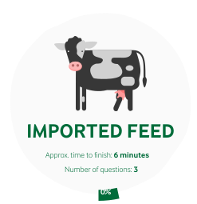

You've completed the Imported Feeds section
FINAL RESULT: 0,3596 C/kg milk
LAST YEAR RESULT: 0,3996 C/kg milk
Congratulations, you did better than last year. You have reduced 0.0400 C/KG milk. Here are some statististics of your imputs compared to last year. Seems like you have improved in every aspect from last year. Good job!
INPUT STATS
MILK
